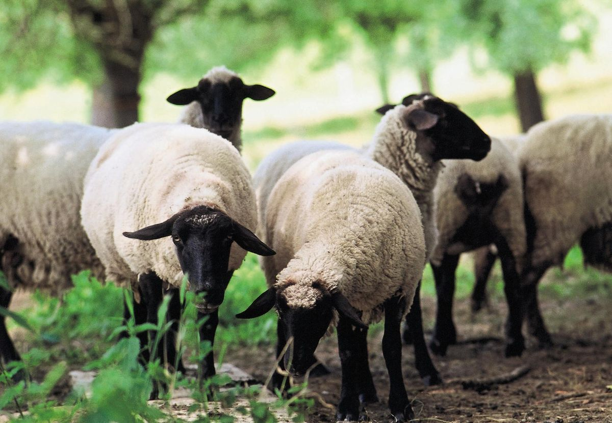
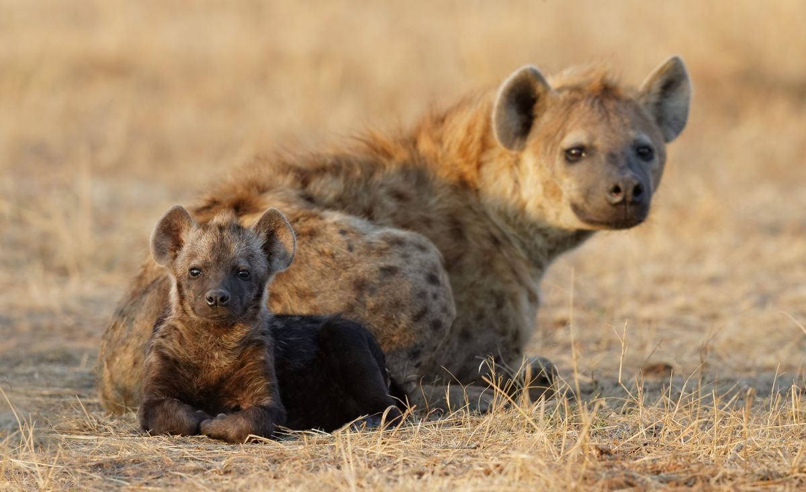

Dogs
Domestic dogs are mostly kept as pets,though many breeds are capable of surviving on there own,whether it's in a forest or on city streets

Cats
Domestic cats are characterized by supple low-slung bodies,finely molded heads,long tails that aid in balance,and specialized teeth and claws that adapt them admirably to a life of active hunting.

Sheep
Sheep or domestic sheep (Ovis aries) are domesticated,ruminant mammals typically kept as livestock.
- Lions
- Hyena
- Elephant
- Zebra
-
Lions
The lion is a large cat of the genus panthera.It has a muscular,broad-chested body,short,rounded head,round ears,and a hairy tuft at the end of its tail.

-
Hyenas
There are three hyena species-spotted,brown,and striped.Spotted hyenas are the largest of the three.They are fairly large in build and have relatively short torsos with lower hinquarters,and slopy backs.They have an excellent night-time vision and hearing.Hyena have long forelegs and a powerful neck and shoulders for dismembering and carrying prey.
 -
Cheetah
A cheetah is a large cat and native to Africa and central Iran.It is the fastest land animal,estimated to be capable of running at 80 to 128km/h

Wild Animals
These are mammals,birds,fish,or other creature of wild nature endowed with sensation and the power of voluntary motion.Examples of wild animals are: